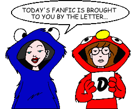
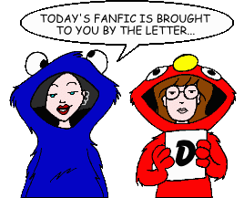

Fan Fiction
"D" by Author

Fan Fiction
"D" by Author

|
Authors: If you no longer wish for any of your stories to be posted, please send e-mail to fanfic@lawndale.net and I will remove them at once. |
| D.W.I. |
| Thoughts During a Boring Speech Category: School Situations Daria's thoughts during Ms. Li's incredibly long, incredibly boring graduation speech. |
| Dallas Bolen (slipknotstonesourmudvayne@yahoo.com) |
| Dammit! Category: Miscellaneous Feeling a little deja vu? Daria and Jane go on yet another trip with Mystic Spiral. |
| Dammit! Part 2 Category: Romance Daria, Jane, and Mystic Spiral finish up their trip. |
| Daniel Callahan |
| Daria Morgenpotter & The New Same-Old, Same-Old Category: Crossovers & Parodies Mix a little "Daria" with a little "Harry Potter" and what do you get? Well... |
| Daniel O. Gilbert |
| The Mission Category: Crossovers & Parodies Daria helps the love of her life, Trent, save his mother from rebels in Central America, with the help of John Thomas Rourke of "The Survivalist Series." |
| Daniel Suni (daniel.suni@kolumbus.fi) |
| End Weekend, End Category: Miscellaneous Jane gets sick. Daria gets bored. Helen gets worried, and demands that Daria attend a course in positive thinking. Matter and anti-matter collide on a weekend that just drags on and on and on... |
| Hotter than Hades [Artwork] Category: Miscellaneous Things heat up when an unusually intensive warm front descends upon Lawndale. |
| How Deep It Goes Category: Miscellaneous An introspective, six-part story on the meaning of life, as Daria tries to cope with the suicide of a close friend and the reasons behind it. Warning: if you're looking for a light read, look elsewhere, as this story is guaranteed to make you think. |
| A Lousy Deal Category: Miscellaneous The nurse at Lawndale High discovers a few cases of head lice, and thanks to Ms. Li, Daria, Jane and Jodie end up with the task of informing the school on what to do. But how will the Fashion Club handle this crisis...? |
| Satura Tota Nostra Est Category: School Situations When Daria, of all people, is caught cheating, Ms. Li decides to take advantage of the situation, and Daria finds herself *really* stuck between a rock and a hard place. (And if you want to find out what the title means, you'll have to read the story!) |
| A Sick, Sad Goodbye Category: Miscellaneous Daria and Jane have a discussion about their favorite TV show. |
| Daniel T. Dey |
| The Highland Invasion Category: Crossovers & Parodies Just when Daria thought she could leave Highland behind, the first Lawndale-Highland exhibition football game brings an influx of students, faculty, family and fans from Highland. To make matters worse, Todd's gang, who is running from the law, brought two unflattering memories with them... |
| The Insubordinator Category: School Situations Lawndale High gets a new kid, who's got a bad habit of talking back to the faculty. This trait proves to be quite admirable to many of the students, including Daria, as he tells off teachers like Ms. Barch, and Ms. Li. But where does his hostility come from? Will we find out when Daria is forced to tutor him by Mr. O'Neill? Meanwhile, Mystik Spiral is teaming up with a more successful ska band for a duet album. |
| Quinn the Brain: Alternate Ending #2 Category: Alternate History Daria's not satisfied with simply dressing like Quinn to threaten her identity. In this alternate version, she tags along on Quinn's date with the Three J's, and may end up with some of them. |
| Danielle (rdda@massed.net) |
| Trouble with Groupies Category: Miscellaneous Trent and Jesse look for groupies. |
| Danny Bronstein (dannyclark80@yahoo.com) |
| Ann Category: Miscellaneous Letters to Daria from an obsessed fan. Based on "Stan" by Eminem. |
| Fast Times at Lawndale High Category: Past & Future The adventures of Jane and Trent--before Daria came to Lawndale. |
| Hell Hath No Fury Category: Crossovers & Parodies Daria discovers that she has telekinetic powers... on the eve of the Lawndale High prom. Things really heat up in this parody of Stephen King's "Carrie." |
| Misfit Love Category: Miscellaneous Daria becomes friends with the new kid in school, Jared Dorkowitz. |
| Misfit Love ML20: Twenty Years Later Category: Past & Future Daria's old nemesis, Jared Dorkowitz, is back and may be out to get her. |
| One-Band Town Category: Crossovers & Parodies A crossover with the TV series "South Park." |
| Sex and the Cynical Girl Category: Romance Daria feels pressured to have sex with her boyfriend Trent. |
| Thicker than Water Co-written by C.E. Forman Category: Miscellaneous Daria and Quinn learn about the Morgendorffer and Barksdale family histories when they have to produce a family tree for Mr. O'Neill's class. They get a little help from a visiting Aunt Amy, who gives in to a wild impulse and has a one-night stand that could turn out to have serious consequences. |
| Who Shot Principal Li? [Artwork] Category: Miscellaneous Ms. Li's latest unpleasant changes to the school (which includes the installation of a genuine electric chair) result in a turn of events that leads everyone to want to murder her. A homage to the classic "Who Shot Mr. Burns?" two-part episode of "The Simpsons." |
| Dante Tremere (whyteagle@hotmail.com) |
| The Path Less Trodden Category: Past & Future A letter to Jane from Daria in the future. |
| The Story In Which Daria Goes to a Party, Gets Drunk, and Does Bad Things, Revisited Category: Miscellaneous The title pretty much tells the story, written with the "anti-shippers" in mind. NOT your average story! |
| Daria C. Montello |
| A Cruise Gone Wrong Category: Miscellaneous Go inside Daria's journal as she goes on a family cruise. Find out what happens to them when they are marooned on an island in this multi-part story. |
| Daria's Double (C.F.) |
| The Future Lawndale High Category: Past & Future The futures of the characters. |
| Dark Kuno |
| Two Halves Category: Series & Multi-Part Stories (Alternate History) The continuing story of everyone's favorite family and their sarcastic leading lady... with one interesting difference. Life in Lawndale is now twice as cynical and sarcastic thanks to the presence of Quinn Morgendorffer's brother and sister, twins Daria and Alex. |
| Dark_One Shadowphyre (darkone2813@mindspring.com) |
| In Dreams Category: Romance A late-night conversation between a young girl and an older musician turns to talk of romance. |
| One Night (prose version) Category: Romance Daria and Jane attend a party at Mystik Spiral bandmember Max's house. Daria ends up drinking too much of the spiked punch... and has the mother of all regrets when she wakes up the next morning. Original story by WWMyra. |
| Dave Hines (boffo97@mail.com) |
| The Glory of Lawndale High Category: School Situations A new student shows up at Lawndale High, but he's not the same as the other students. How will Daria and company deal with a bully, especially when people in high places are protecting him? |
| The Revised Daria Fanfic Cliche Drinking Game Category: Miscellaneous A revised (with permission) version of the original by Aaron Solomon "Hierargo/Nails" (ben Saul Joseph) Adelman, now sorted by topic and with updated entries. How many drinks can come out of your favorite fanfic? |
| Dennis (dkhigbee@comcast.net) |
| Across the Violet Sea Category: Past & Future An AU take on Daria's reaction to September 11, 2001, as a graduating member of New York University's Class of 2003. |
| Calling Calliope Category: Past & Future A chance encounter gets Tiffany mixed up with someone from her past. What does he want, and will it cost her? |
| Diary of a Mad Cat Lady Category: Past & Future A ficlet looking back on a life gone not quite according to plan. |
| A Family Deal Category: Miscellaneous Sure, Daria and her family can have a pleasant card game... in a story. But what would a Morgendorffer family card game look like in real life? |
| Girls Together Sarcasticaly Category: Series & Multi-Part Stories (Past & Future) Daria's in Boston and in a band with some familiar faces, some expected and some surprising. |
| The Griffin Variations Category: Series & Multi-Part Stories (Miscellaneous) A series of unrelated ficlets focusing on Sandi Griffin, her family, and the relationships among them and the rest of Lawndale. |
| Heartbeat in Iambic Category: School Situations Sandi realizes something she never knew when she submits a poem to a magazine for publication. Set during and after the fifth season episode "The Story of D." |
| Last Dance Category: Past & Future All is not as it seems when Daria finds herself out on the town enjoying life with... St. Patrick's Day? |
| Lie! Lie! My Darling! Category: Alternate History What if Tom had been the one who was honest about The Kiss? An alternate version of "Die! Die! My Darling!" where one change leads to a very different place. |
| Mata Dari Category: Past & Future Daria is nearing 30 with a dull job and a familiar boss who she hates. But is all as it seems? |
| One Step Forward Category: Past & Future A chance encounter on Dega Street leaves Daria with a decision to make about one of her old teachers. |
| Pluck'd a White Rose Category: Romance A different kind of Daria/Tom shipper. How different, you ask? Well, for one thing, it's set more than 500 years before the show. |
| That I Can Depend On Category: Past & Future Why does Jane get so angry when Tom eats her gummy bears in "Mart of Darkness?" And why can't she stand blue M&Ms? The answers lie with a younger Jane. |
| Tom's Eye View Category: Miscellaneous The events of "Dye! Dye! My Darling," as seen from Tom's point of view. |
| Turnabout Confusion Category: Series & Multi-Part Stories (School Situations) A heated argument leads the Sisters Morgendorffer to walk a week in each others' shoes. Will anything be left of Lawndale High when they're done? |
| A Twisted Little Corkscrew Category: Past & Future "How about the success, stardom, and eventual alcoholism?" Daria is a successful journalist, but the trappings of success are more like traps. See how she deals with one such trap in this ficlet. |
| Deref (bfderef@yahoo.com.au) |
| Antipodean Daria Category: Miscellaneous Dinnertime at the Morgendorffers... with a twist. |
| The Kiss of Soft Wings Category: Romance A microfic in which Jamie takes Quinn for a fine dining experience. |
| A Pet for Quinn Category: Miscellaneous Quinn gets a pet. The word "unusual" only begins to describe it. |
| A Romantic Conversation Category: Romance Two lovers have a little romantic chat. An entry in one of the PPMB's "Iron Chef" contests. |
| Valentine's Day Category: Holidays Jane gets a Valentine's Day gift. An entry in one of the PPMB's "Iron Chef" contests. |
| Were Oh Were Category: Sci-Fi, Fantasy & Horror A ficlet. Daria's having a bad day. |
| Writes of Passage [Artwork] Category: Series & Multi-Part Stories (Miscellaneous) Love is never easy, true love even less so. Note: This story includes content (language, violence, or sexual situations) that may not be appropriate for some readers. |
| Derek |
| Celebrity Jeopardy: Daria Edition Category: Series & Multi-Part Stories (Crossovers & Parodies) In the grand tradition of "Saturday Night Live" comes this wacky series of parodies of the celebrity editions of the venerable game show "Jeopardy!", this time starring characters from "Daria" and various personalities in "Daria" fandom. (Each episode is co-written by various guest authors.) |
| Dervish (janerhynn@hotmail.com) |
| Call of Quinnthulhu Category: Sci-Fi, Fantasy & Horror Quinn has a secret of what life was like for her before she came to Lawndale. But now her secret can no longer be hidden, and she finds that it's part of an awful and awesome legacy that not only terrifies her, but threatens the very existence of all humanity. |
| Cries for Help Category: Sci-Fi, Fantasy & Horror Lawndale is in trouble when Mr. O'Neill discovers his monstrous potential. Alison, Wind, and Link guest star. Note: This story includes content (language, violence, or sexual situations) that may not be appropriate for some readers. |
| An Ill Wind Category: Sci-Fi, Fantasy & Horror Daria finds herself in big trouble as she becomes the focus of a malevolent poltergeist. Daria horror inspired by the Bell Witch and the Amherst poltergeist. |
| Something To Shoot For Category: Series & Multi-Part Stories (Miscellaneous) A shooting at Lawndale High shocks the nation, and makes everyone (especially their mother) wonder who Daria and Quinn Morgendorffer are. A three-part story with some minor crossover elements from "Beavis and Butt-Head Do America." |
| Devarie Hunter |
| Bloodshot [Artwork] Category: Miscellaneous Daria takes a blood type test in Ms. Barch's class, and is shocked at what she discovers. |
| Di (dltbow@aol.com) |
| "Gifted" From Jane's POV Category: Miscellaneous The episode "Gifted," from Jane's point of view. A response to Dark Kuno's Iron Chef Challenge: The POV Shift. |
| Between the Boards Category: Miscellaneous Response to the PPMB Write-Off Challenge: What if Quinn was a jock? |
| Christmas Snow Category: Holidays A sequel to The Angst Guy's "April Is The Cruelest Month." It's the Christmas after the Colorado trip. How do Daria, Jane, Trent and Daryll celebrate it? |
| Correction Category: Past & Future How a tragic mistake that occurred in the past was fixed. |
| Daria - The Next Chapter Category: Series & Multi-Part Stories (Past & Future) The new adventures of Daria and Jane, set over six years after the series (post-college). |
| Daria/Dorian Category: Series & Multi-Part Stories (Sci-Fi, Fantasy & Horror) Because of an ancient family curse, Daria is turned into a guy: Dorian Morgendorffer. How does he/she and everyone around them adjust and handle the change? Series starts between seasons 3 and 4, and is a response to the Iron Chef Challenge: "Genderbend wha!?" |
| The Graduation Gift Category: Past & Future Jane receives a special gift for her college graduation. |
| The Greatest Gift Category: Past & Future A five-year-old Daria receives a special Christmas present from her favorite aunt. |
| Janet Barch: My Life as a Tween Queen Category: Past & Future A little tale about a young Janet Barch and her quest to find a Davy Jones lunchbox. |
| The Lane That Wasn't Category: Sci-Fi, Fantasy & Horror What road would you choose if you were given the choice? Jane Lane is about to find out. |
| The Question Category: Romance In response to Roxanne M's Iron Chef Challenge: "The Date." Mr. DeMartino and Mr. O'Neill have been dating for a year and Mr. DeMartino is ready to pop the question. |
| Tattoos and Tequila Don't Mix Category: Miscellaneous Write-off Challenge response featuring two Lawndale students going to a vacation spot for Spring Break. Do they make it back in time... and what do they tell their fellow classmates? |
| Ten Years Category: Romance Sequel to "Undefeated." It's Daria and Jane's ten year anniversary and Jane has a special gift for her wife. |
| There's Something Furry in Denmark Category: Sci-Fi, Fantasy & Horror Daria and the gang are putting on the play "Hamlet" with some rather, ah, "unique" costume ideas. Write off-challenge response to create a Dark Modern Fantasy. |
| Undefeated Category: Romance Daria and Jane's relationship has been dealt a major blow by an outside force. Can a phone call from an old friend save it before it is lost forever? |
| The Weight of Conscience Category: Alternate History Write-off challenge response. Quinn is in therapy for feeling as though she failed someone. A what-if the episode "Fat Like Me" had ended differently. |
| Where Do We Go From Here? Category: Romance The first prequel to "Undefeated" and "Ten Years." This is where Daria and Jane's relationship changes from friendship to something more. |
| Diana Morgan (Mclemcan1@aol.com) |
| Just Another Day [Artwork] Category: Miscellaneous Daria decides to tell us her typical day in a journal entry. |
| Sick Sad Jamboree Category: Miscellaneous Lawndale high holds a "voluntary" picnic on the same day that "Sick, Sad World" premieres a brand new LIVE episode. Will Daria and Jane attend the "voluntary" picnic, or will they stay home and deal with Ms. Li later? |
| Diana Rajchel |
| Sew What? Category: Miscellaneous Daria has to do some quick thinking when Sandi, after failing to steal Tom away from Daria, tries to kick Quinn out of the Fashion Club as punishment for Daria's "social code violation." |
| Diane Long |
| Diane's Daria Continuum [Artwork] Category: Series & Multi-Part Stories (Romance) A healthy dose of drama infuses this series of stories that focuses on Daria and Trent's romance, from its beginnings during Daria's high school days to many years into the future. |
| The Last Stupor Co-written by Jon Kilner Category: Crossovers & Parodies A dark comedy about the mixture of violence and idealism. Very loosely based on the film "The Last Supper." |
| Sea's Sorrow Category: Sci-Fi, Fantasy & Horror When Daria accompanies Jane and Tom on a Mystik Spiral gig to a quaint bed-and-breakfast on the coast, the World's Biggest Skeptic finds herself (along with the rest of the gang) embroiled in a mystery of supernatural proportions. |
| The Trick's the Treat Category: Romance Sharp knives, pumpkins, and a healthy dose of sarcasm figure into the picture as Daria and Tom further explore their relationship on a chilly Halloween night. |
| Disco 3:16 (disco316@yahoo.com) |
| Acts of Cupidity Category: Romance When Valentine's Day has one too many, chaos reigns among the couples of Lawndale. |
| The Brain and the Beauty Redux Category: Romance In this remake of Ronin's "The Brain and the Beauty," an outcast and a popular girl find their worlds colliding after an innocent bet changes their lives forever. |
| Once Upon a Time in Lawndale Category: Crossovers & Parodies A red-haired traveller looking for revenge.A babyfaced killer looking for power.A fashionable outlaw looking to clear her name.A gentleman from the East looking for a better life.It all happened once upon a time in Lawndale. |
| The Quinn Show Category: Sci-Fi, Fantasy & Horror Inspired by the film The Truman Show, as well as the "Hidden Nature" Iron Chef on the PPMB, Quinn realizes that her life isn't what she thought it was. |
| Snuffed Animals Category: Alternate History When the flames are put out, the fires are just beginning to burn. See how things might have developed had the events of "Fire!" happened differently. |
| DJW (mechahead@hotmail.com) |
| Open Windows Category: Series & Multi-Part Stories (Miscellaneous) (no description given) |
| Doggieboy (doggieboy80@hotmail.com) |
| Apocalyptic Daria Category: Series & Multi-Part Stories (Miscellaneous) It's the end of the world as Daria and Jane know it, but they're far from feeling fine. An epic multi-part tale that depicts the days and weeks after a global thermonuclear war, and how the two amigas struggle to survive as the threads of civilization unravel around them. |
| The Cynic, The Fashionista, and The Jackass Category: Series & Multi-Part Stories (Crossovers & Parodies) A crossover western parody about a search for gold, with three of the most unlikely partners in the title roles. |
| Daria Goes to the Customs Office Category: Miscellaneous Daria has to help Quinn when she is arrested for smuggling. But will she? |
| Daria the Hoosier Category: Series & Multi-Part Stories (Sci-Fi, Fantasy & Horror) During the events of the episode "Daria!," Daria Morgendorffer suddenly finds herself taken from the Lawndale of her time and deposited in the Indiana of 1979. She must find a way to get back home while at the same time find help getting there. |
| A Little Vacataion Category: Series & Multi-Part Stories (Sci-Fi, Fantasy & Horror) Zombies, teleportation, alternate realities, and let's not forget the requisite mad scientist, all of which combine to create one of the most horrific adventures Daria has ever been on in this multi-part story. (A "Tales of the Ringbearers" story.) |
| A Night of Bells (But No Whistles) Category: Crossovers & Parodies A temporary clothing change gets Daria the most unexpected kind of attention. A crossover with the Cartoon Network Adult Swim series "Robot Chicken." |
| Don Fields (donothe13th@yahoo.com) |
| Everything You Know Is Wrong! Category: Crossovers & Parodies In a bizzare parody of the Firesign Theatre's audio play of the same name, Daria and Jane get mixed up with a hole to the center of the Earth, alien insurance investigators, and Art Bell fanboys. |
| It's the Millennium, Stupid! (Part 1) Category: Crossovers & Parodies A terminally unfinished sequel to "The Sound of One Band Sucking," incorporating all sorts of wackiness from "South Park" and "The Blues Brothers." |
| Kind of Blue Category: Miscellaneous A (kinda) normal day at the movies with the Morgendorffers, among other things. |
| Somewhere Over the Edge Category: Miscellaneous In this dark comedy, Daria gets a good lesson on death, profits and the American Way, thanks to Upchuck and his "friends"...huh-huh. |
| The Sound of One Band Sucking Category: Crossovers & Parodies Based on... excuse me, ripped off from Danny Bronstein's "One Band Town." Daria, Jane, and the rest of the Mystik's travel to a gig in South Park to perform at "CowFest '99." They barely survive (the cows incuded). |
| The Whole Damned Thing Category: Miscellaneous A wandering little story about Daria's quest for peace and quiet and other of life's useless things. |
| Dr T |
| Tigresses of Lawndale Category: Series & Multi-Part Stories (Alternate History) The sequel to "Tigresses of Summer." After her summer at Ashfield, Daria brings a more aggressive attitude to her senior year. |
| Tigresses of Summer Category: Series & Multi-Part Stories (Alternate History) We all know what happened in "Dye! Dye! My Darling." In the end, the experience probably strengthened Daria and Jane's friendship (despite the storms of that summer) and helped Daria mature to where she was at the end of "Boxing Daria" and "Is it College Yet?" Still, given the dynamics of the various characters of the show, was that course the only possible series of events? And, if not, how might that next summer have been different for Daria and Jane? Could things have worked out even better? |
| DragonPanther (edgargaribaldi@mail.com) |
| Essay of Exile Category: Crossovers & Parodies In this crossover with "Invader Zim," Zim and Dib are assigned an essay, and Zim turns to the Lawndale citizens for help. A three-part story. |
| DW Death (barely_human@yahoo.com) |
| Prepare for Bore Category: Miscellaneous The Lawndale perspective on the 9/11 terrorist attacks. This story has a happy ending; we can only hope that life imitates art. |